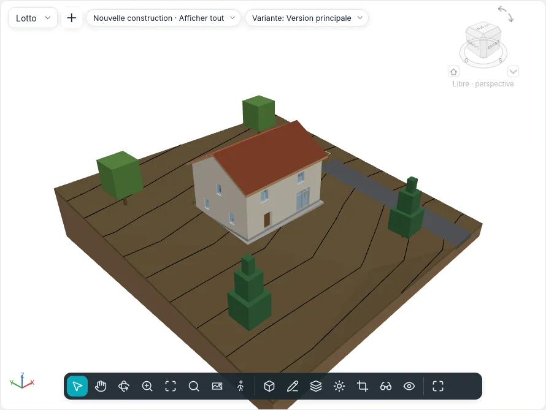

Plan de site et terrain
Le sol sur lequel repose le bâtiment et les dessins de la parcelle autour se font avec Volume et site ▸ Site et Modifier le site. Ils fonctionnent dans les plans d'étage et dans le Plan de site ; un terrain et une plateforme s'esquissent aussi dans les vues 3D, sur le plan de leur niveau.

Terrain
Un terrain est un solide : un contour esquissé (avec des trous) sur un niveau, façonné par des points, avec les couches et l'épaisseur de son type.
Terrain ▾ a deux façons :
| Façon | Fonctionnement |
|---|---|
| Créer à partir d'une esquisse | Mode esquisse Créer le contour du terrain, avec le groupe commun Dessiner (lignes, rectangle, polygones, cercle, arcs, Choisir des lignes). Dessinez une boucle fermée ; une boucle à l'intérieur est un trou. Terminer le mode d'édition crée un terrain plat, son dessus au Décalage de hauteur par rapport au niveau |
| Créer à partir d'une importation | La boîte de dialogue Ajouter des points à partir des calques sélectionnés : les calques d'un DWG ou DXF importé avec les hauteurs (lignes et points 3D) dont les points façonnent le terrain, ou Créer à partir d'un fichier de points… (CSV ou TXT, son unité choisie dans Format) |
Un fichier de points donne sur chaque ligne d'abord x, y et z ; les noms et les autres colonnes sont ignorés, et de deux points aux mêmes x, y reste le z le plus haut. Au-delà de la limite des Paramètres de site (20 000 points par défaut, de 10 000 à 50 000) les points sont échantillonnés jusqu'à cette limite et un message dit combien ont été gardés.
Modification de forme
Un terrain sélectionné montre le groupe Modification de forme :
| Outil | Fonctionnement |
|---|---|
| Ajouter un point | Cliquez dans le contour. Dans la barre des options : Absolu (l'Élévation saisie, depuis la Base de l'élévation : niveau courant, point de base du projet, point topographique, origine interne) ou Relatif à la surface (un décalage au-dessus ou au-dessous de la surface là où vous cliquez) ; les Accrochages XYZ prennent l'élévation d'un coin de sol ou d'une extrémité de mur, plus le Décalage des accrochages |
| Modifier les sous-éléments | Cliquez un point : faites-le glisser en plan, ou saisissez sa hauteur au-dessus du dessus d'origine du terrain |
| Ajouter une ligne de division | Deux clics : un pli de la surface, droit entre leurs élévations |
| Réinitialiser la forme | Supprime tous les points et toutes les lignes de division |
| Simplifier le terrain | Garde une part des points (1 000 points à 70 % deviennent 700) |
La surface est triangulée à travers le contour et les points ; les courbes de niveau suivent aussitôt.
Type, couches et courbes de niveau
Le type du terrain a sa Structure dans la même boîte de dialogue Couches du type que les murs et les sols : la couche marquée Variable absorbe la forme, ainsi le dessous reste plat. Affichage des courbes (Affichage des courbes dans la palette du terrain) liste des groupes de courbes de niveau : Début, Fin, Incrément, Valeur unique ou Valeurs multiples, le style de ligne (principales, secondaires, lignes cachées, arêtes de la triangulation) et une case pour éteindre un groupe. Un projet nouveau dessine les courbes principales tous les 5 m et les secondaires chaque mètre ; les types Route asphaltée, Allée en gravier et Trottoir n'en dessinent aucune.
Les courbes de niveau sont aussi tracées sur le terrain dans les vues 3D, avec leurs styles de ligne, cachées là où le bâtiment se trouve devant.
En coupe, le terrain est coupé avec ses couches et les motifs de leurs matériaux. Une Elévation du point placée sur le terrain y lit son élévation.
Visibilité et graphisme ▸ Terrain a les sous-catégories Courbes de niveau principales, Courbes de niveau secondaires, Lignes cachées, Lignes de pli, Points du contour et Points intérieurs ; les trois dernières sont éteintes tant qu'on ne les allume pas.
Options du site ▾ ▸ Ombrage lissé du terrain rend lisse chaque terrain dans les styles ombrés.
Options du site ▾ ▸ Stabilité du vide de déblai : un déblai qui ne réussit pas en entier est repris avec son contour déplacé de quelques millimètres en x ou en y ; Creuser indique combien de déblais ont été déplacés.
Modifier le terrain
| Outil | Fonctionnement |
|---|---|
| Sous-zone | Esquissez une boucle sur le terrain sélectionné (ou cliquez d'abord un terrain). Son Type donne son matériau ; le Décalage de sous-région la soulève (une bordure) ou l'enfonce dans son hôte (avec son Volume d'excavation) |
| Diviser le terrain | Cliquez le terrain, puis esquissez une boucle fermée à l'intérieur ou des lignes ouvertes d'un bord à l'autre. Une sous-zone que la division ne peut garder demande Supprimer les occurrences |
| Fusionner les terrains | Cliquez le terrain principal, puis le second : ils doivent partager une arête ou se chevaucher. Supprimer les points le long des arêtes communes est activé par défaut |
| Creuser / Supprimer l'excavation | Le terrain sélectionné, cliquez un sol, un toit, une plateforme ou un autre terrain qui le traverse. Volume d'excavation individuel liste chaque coupe |
| Nivellement | Modifier la région nivelée demande une copie exacte ou seulement les points du contour ; cliquez un terrain d'une phase antérieure. Il est démoli dans la phase courante et sa copie, nouvelle, s'ouvre en modification de forme. La copie indique Déblai, Remblai et Déblai/remblai net |
Une nomenclature des Terrains liste le déblai et le remblai, avec un total général.
Plateforme
Plateforme esquisse une boucle fermée sur un terrain (Créer le contour de la plateforme, avec Choisir des murs et Flèche d'inclinaison). Son dessus est au Décalage de hauteur par rapport au niveau ; le terrain dessous est déblayé ou remblayé jusqu'à sa face inférieure. Son type a une Structure de couches et le motif de remplissage du niveau de détail bas.
Éléments de site et stationnement
Élément de site place des arbres, des arbustes, des bancs, des lampadaires et des bouches d'incendie, un à chaque clic (barre d'espace pour tourner) ; Stationnement place des places de stationnement (90°, 60°, 45°, en long, accessibles). Tous deux reposent sur le terrain ou la sous-zone sous le clic et la suivent quand elle change. Choisir un nouvel hôte les déplace sur un autre terrain ou une autre sous-zone ; Répéter en série en fait des rangées.
Limites de propriété
Limite de propriété demande comment la créer :
- Créer par esquisse : les lignes du mode esquisse ; une boucle ouverte avertit que son aire ne peut pas être calculée (terminez de nouveau pour la garder ouverte) ;
- Créer en saisissant des distances et des directions : le tableau Limites de propriété, une ligne par tronçon avec Distance, Direction (comme N 45°00'00" E), Type (ligne ou arc), Rayon et G/D ; Insérer, Supprimer, Haut, Bas et Fermer, qui ajoute le tronçon de retour au début. Les tronçons suivent le nord géographique.
Une limite de propriété sélectionnée montre Modifier le tableau. Options du site ▾ ▸ Données de propriété règle l'Affichage des angles (direction ou degrés) et les unités. Les limites de propriété s'affichent par défaut dans les plans de site et les vues 3D ; une nomenclature des Limites de propriété liste leur nom et leur aire.
Étiquettes des courbes de niveau
Étiquettes des courbes de niveau : cliquez le début et la fin d'une ligne qui traverse les courbes de niveau ; chaque courbe qu'elle croise affiche son élévation, tournée pour se lire depuis le nord du projet. Le type de l'étiquette règle le texte et si seules les courbes principales sont étiquetées.
Le plan de site
Chaque projet nouveau a un Plan de site ; Vues ▸ Plan ▾ ▸ Plan de site en crée un autre, pour le niveau actif : 1:200, coupé au-dessus du bâtiment jusqu'à 10 m sous le niveau, orienté au Nord géographique. Orientation dans ses propriétés le ramène au Nord du projet.
Paramètres de site
Options du site ▾ ▸ Paramètres de site contient les courbes de niveau du projet (pour les types de terrain qui ne fixent pas les leurs), le Matériau de coupe et la Profondeur du poché des types de terrain sans couches, les données de propriété et le nombre maximal de points qu'une importation garde.
Pas encore
Terrain depuis une face, Lier une topographie et Contexte environnant arrivent dans une phase ultérieure.